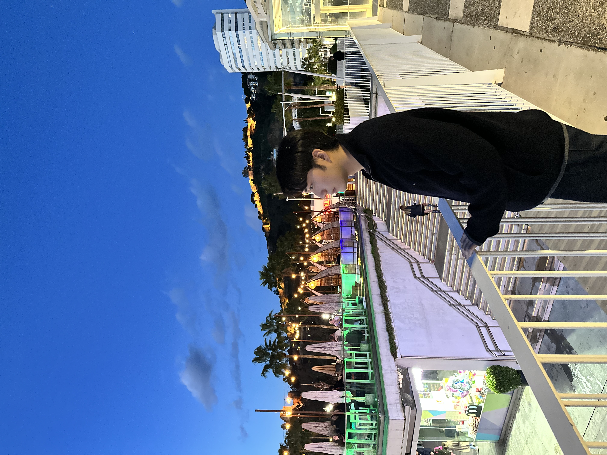
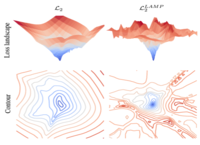

Hyeonho Jeong
AI Researcher @ Adobe Research
hyeonhoj (at) adobe (dot) com · drake6751 (at) gmail (dot) com
About Me
I am a researcher at Adobe working on video generation and editing. Currently, I am primarily focused on bringing long video generation and editing capabilities to Video Firefly. I have additionally worked on camera-controllable video generation for Firefly foundational models. Previously at KAIST AI, I worked on improving the controllability and efficiency of video synthesis using diffusion models under the supervision of Prof. Jong Chul Ye.
Adobe Research Internship / University Collaboration: If you are interested in collaborating with me, don't hesitate to reach out via my work email.
Adobe internships are usually discussed around November, December of the year preceding it.
News
- [Feb. 2025] SpaceTimePilot is accepted to CVPR 2026.
- [Aug. 2025] After finishing my master's at KAIST AI, I joined Adobe Research.
- [Jul. 2025] JOG3R is accepted to BMVC 2025.
- [Jun. 2025] Reangle-A-Video is accepted to ICCV 2025.
- [Feb. 2025] Track4Gen is accepted to CVPR 2025.
- [Dec. 2024] SMA is accepted to AAAI 2025.
- [Nov. 2024] VMC was presented as an oral at KCCV 2024 and won a finalist award at the Qualcomm Innovation Fellowship 2024.
- [Jul. 2024] DreamMotion is accepted to ECCV 2024.
- [Jul. 2024] I started a research internship at Adobe, mentored by Duygu Ceylan, Chun-Hao Huang, and Niloy J. Mitra.
- [Feb. 2024] VMC is accepted to CVPR 2024.
- [Jan. 2024] Ground-A-Video is accepted to ICLR 2024.
- [Aug. 2023] I started my M.S. at KAIST Graduate School of AI (Advisor: Prof. Jong Chul Ye).
Publications
-

ICASSPNeural Network Training Strategy to Enhance Anomaly Detection PerformanceInternational Conference on Acoustics, Speech, & Signal Processing (ICASSP), 2024
 ICCV
ICCV
 BMVC
BMVC
 CVPR
CVPR
 AAAI
AAAI
 CVPR
CVPR
Past Interns
I was lucky enough to have worked with the wonderful talents:
- Dohun Lee (KAIST)
- Jente Vandersanden (MPI)
- Zhening Huang (University of Cambridge)
- Kiran Chhatre (KTH)